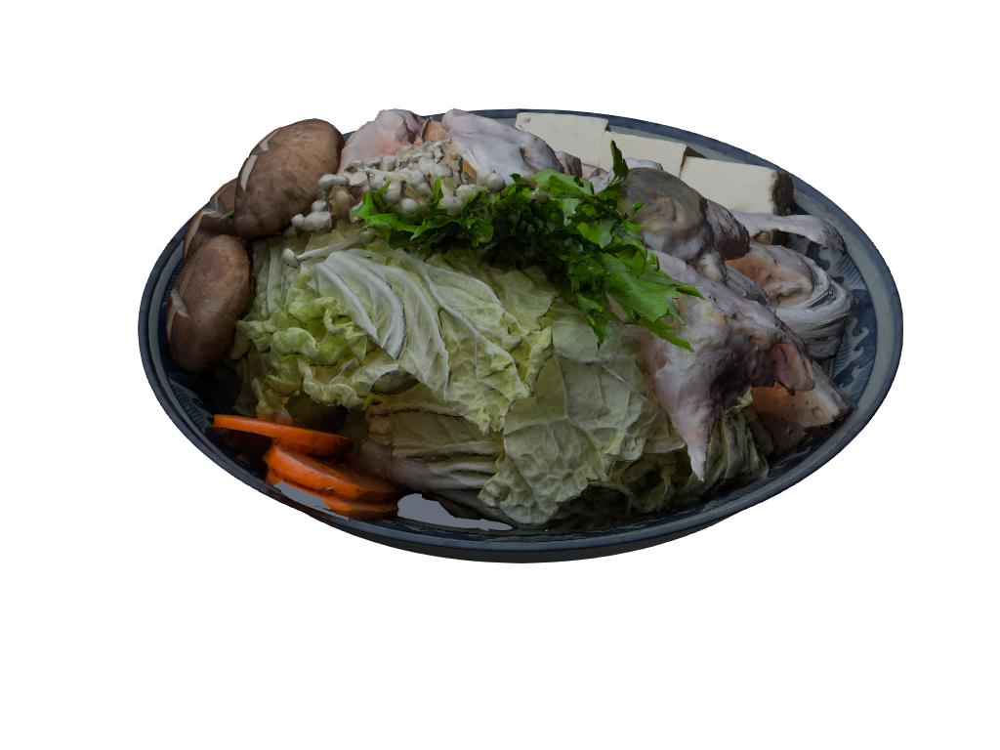

37.39 MB
 USDZを保存
USDZを保存深廣
どちらも同じ鍋セットです。37.39 MB版は元の精度、19.64 MB版は色や透明度などの数値の精度を下げています。
iPhoneのSafariで順に開き、同じ向きから丸印の切り身を見てください。左右に少し回すと、ツヤの動きを比べられます。
開けない場合は「USDZを保存」から「ファイル」で開けます。真っ白な場合は、下のHigh Detail版も同じiPhoneで開いて表示を比べてください。

20 MB版 · USDZ 19.47 MB
iPhoneで保存画面が出た場合は、ダウンロードしたUSDZを「ファイル」から開いてください。